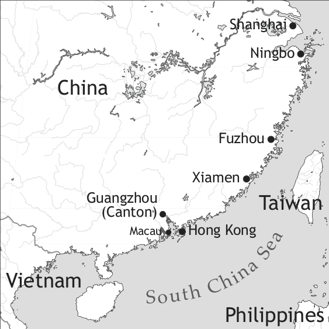

by Stephen Matthews and Michelle Li

Chinese Pidgin English is one of the earliest pidgin languages to be documented. The term “pidgin” itself is first attested in Chinese Pidgin English, and the influence of the language extends to contact languages such as Hawai'i Creole and Melanesian Pidgin (Tok Pisin, Bislama). Chinese Pidgin English is effectively extinct and despite its historical importance it is poorly documented, with the available sources presenting numerous problems of interpretation (Ansaldo et al. 2010).
Chinese Pidgin English is first attested in around 1715 in reports from the Pearl River Delta (Morse 1926: v.1, 67). At this time the China trade was developing, with British, other European and later American ships visiting Macau, Whampoa and Canton (now Guangzhou). Earlier Chinese-European contact in this area had involved Portuguese traders. Phrasebooks from Macau, in which Portuguese or Macanese phrases are represented in Chinese characters, attest to the use of Portuguese for cross-cultural communication (Bawden 1996). The earliest attestations of Chinese Pidgin English show strong Portuguese influence (Tryon & Baker 1996: 490). As the China trade developed, Pidgin English replaced Portuguese as the medium of communication (Van Dyke 2005: 77). Cantonese is the main substrate language, but there are also lexical items from Malay, Hindi and Scandinavian languages, as well as Portuguese (Bolton 2003: 180–85 and Appendix 4); see §10 on Chinese Pidgin English lexicon.
Chinese Pidgin English was used primarily between European traders and Chinese merchants in the limited settings in which such trade was permitted: initially Whampoa and Canton (Guangzhou), later Hong Kong and (from 1842) the treaty ports of Xiamen, Fuzhou, Ningpo and Shanghai. These ports ceased to operate from 1949. Between its origin in the 18th century and its demise in the 20th, Chinese Pidgin English undoubtedly underwent substantial changes (Baker & Mühlhäusler 1990: 90). The description in this chapter focuses on the 19th century when Chinese Pidgin English was widely used in the China trade and in the treaty ports.
Two kinds of sources are available from the China trade period: (i) Pidgin phrases cited in Western texts such as memoirs and travelogues, and (ii) phrasebooks in which Pidgin words and phrases are represented using Chinese characters (a third source is presented by humorous verses purportedly in Chinese Pidgin English such as Leland (1876), but these are widely considered as unreliable). This survey uses (i) the corpora of attestations in English language sources compiled by Philip Baker (2003a, 2003b), and (ii) Chinese language phrasebooks, notably Tong (1862) as transcribed in Li et al. (2005). This phrasebook is particularly valuable as it contains not only full sentences but stretches of dialogue such as the glossed text given below. The Pidgin entries take the form of marginal annotations above or below Standard English sentences, and are found in volumes 4 and 6 of the six-volume work.
In its heyday, Chinese Pidgin English was used for all kinds of contacts between Chinese and Europeans in the treaty ports (Bolton 2003, Zhang 2009). At this time few Europeans spoke Chinese, and it was even forbidden for the Chinese to teach them (Williams 1836: 430). Over time, a class of Chinese educated in English arose, reducing the need for Chinese Pidgin English. The Second World War and the closure of the treaty ports following the Chinese civil war saw the end of the linguistic ecology which had supported Chinese Pidgin English. In Hong Kong, Chinese Pidgin English continued to be used between Europeans and Chinese servants through the 1960s (see the memoir of Booth 2004) but was effectively extinct by the 1990s, even if some phrases (such as Kowloon side meaning ‘on the Kowloon side of the harbour’) remain in use in Hong Kong English.
There is evidence that like other pidgins, Chinese Pidgin English showed variation depending on the first language of the speaker. In many areas of grammar, the options attested vary systematically between the English and Chinese sources. For example, Li (2011a; 2011b) shows that the preposition with is attested in English sources but not in our main Chinese source (Tong 1862). Ansaldo et al. (2011: 299–300) note that substrate influence of Cantonese is more pervasive in the Chinese sources than the English sources, suggesting the co-existence of two distinct lects. For example, wh-phrases are typically fronted in English sources but often left in situ in Chinese sources (see §8 below).
Given that Chinese Pidgin English is now considered extinct, conclusions about its phonology can only be drawn indirectly. A phonetic transcription is provided by Hall (1944), but these data may not be representative since they (a) come from an English native speaker, and (b) post-date the heyday of Chinese Pidgin English as described in this chapter. Reconstructing the phonology of Chinese Pidgin English as spoken in the 19th century requires some guesswork, due in part to difficulty in interpreting the representation of Chinese Pidgin English using Chinese characters. In many cases the characters used appear to be approximations of the actual pronunciation (see Li et al. (2005 82–84) for discussion).
A phonemic inventory for Chinese Pidgin English based on Hall (1944) and Bakker (2009) is shown in Tables 1 and 2.
|
Table 1. Vowels |
|||
|
front |
central |
back |
|
|
close |
i, ɪ |
u |
|
|
close-mid |
e |
ə |
o |
|
open-mid |
ɛ, æ |
ɔ |
|
|
open |
a |
||
|
Table 2. Consonants |
|||||||
|
bilabial |
labio-dental |
alveolar |
post-alveolar |
velar |
glottal |
||
|
plosive |
voiceless |
p |
t |
k |
|||
|
voiced |
b |
d |
g |
||||
|
nasal |
m |
n |
ŋ |
||||
|
trill/flap |
r |
||||||
|
fricative |
voiceless |
f |
s |
h |
|||
|
affricate |
voiceless |
č |
|||||
|
voiced |
ǰ |
||||||
|
lateral |
l |
||||||
|
glide |
w |
y |
|||||
As Bakker notes, it is likely that Europeans added the fricatives: /θ, ð, z, š/. Hall (1944: 96) states explicitly that Chinese speakers replaced /θ/ by /t/, /ð/ by /d/, /š/ by /s/, /ž/ by /z/, and /r/ by /l/. Despite the complex tone system of Cantonese, there is no evidence for tonal distinctions in Chinese Pidgin English, though it is likely that words of Cantonese origin were pronounced with tones by Chinese speakers. There are indications that the tones associated with characters used to represent Chinese Pidgin English syllables are not random, but related to stress: For example, the unstressed second syllable of open is to be pronounced with a low tone (Li et al. 2005 89). Hall (1944: 95) describes three levels of stress.
The syllable structure as represented in Chinese sources is restricted to CV and CVC syllables. This no doubt reflects the limitations imposed by writing Chinese Pidgin English in Chinese characters, as well as the properties of Chinese Pidgin English as spoken by Chinese speakers. Conversely, some syllables apparently attested in English sources may represent the English spelling rather than faithfully reflecting the pronunciation (e.g. think sometimes appears, but the forms thinkee or tinkee may be more representative of the actual pronunciation, especially that of Chinese speakers).
Hall (1944: 96) records a large number of consonant clusters in word-initial and word-final positions. Simplification of Chinese Pidgin English words in English sources is sporadic. All sources show extensive epenthesis of vowels to avoid syllable clusters, as in: sitop ‘stop’ and sileek ‘silk’ (Williams 1836). Similarly, epenthesis is used to avoid syllable-final consonants which do not occur in Cantonese, e.g. much is generally represented as muchee (see example 1 below), in which the two syllables are phonotactically possible in Cantonese.
Nouns do not show morphological variation, e.g. one moon ‘one month’ / two moon ‘two months’. Generic noun phrases are zero-marked.
Demonstratives thisee ‘this’ and that show a two-way contrast in distance. As in English and Cantonese, modifiers precede the nouns, with the exception of relative clauses, which appear to be rare (see §9).
In Chinese sources, the is not used, but that is sometimes used to render the definite article.1
The appears occasionally in English sources:
One is used as an indefinite article:
Chinese sources show no -s plural, although the irregular form children appears. English sources used -s plural sporadically.
Classifiers are commonly used in the two main contexts in which they are required in Chinese, namely following a numeral as in (7) and less commonly, following a demonstrative as in (8):
The classifier cannot be considered obligatory, since it is often missing as in (9), where it would be incompatible with the plural reference:
Whereas Chinese has a large repertoire of classifiers, Chinese Pidgin English essentially uses piecee ‘piece’ for all types of nouns as seen in (7) and (8).
Pronouns show considerable variation in form, as shown in Table 3. Nevertheless, the form my is the dominant first person subject form in both Chinese and English sources. In object position, both my and me are used, with me predominating in Tong (1862). The form he is used with both male and female reference, as well as occasionally referring to plural referents. See Smith (2008) and Tryon & Baker (1996: 488) for discussion.
|
Table 3. Personal pronouns and adnominal possessives |
||||
|
subject |
object |
independent pronouns |
adnominal possessives |
|
|
1sg |
my, I, me |
my, me |
my |
my |
|
2sg |
you |
you |
you |
you/your |
|
3sg |
he, she, it |
he/him, she/her, it |
he/him, she/her |
he/his, she/her |
|
1pl |
we |
us |
||
|
2pl |
you |
you |
you |
you/your |
|
3pl |
he, they |
he, them |
he |
he |
The forms some man and no man are used in Tong (1862), the former systematically:
In possessive constructions, the possessor precedes the possessum without overt marking:
Comparative constructions are marked by more, with the standard of comparative following the adjective directly:
While noun phrase coordination is generally indicated by juxtaposition, the comitative preposition long is sometimes used for this function, as in the following:
This syncretism of comitative and noun phrase coordination is based on Cantonese tung4 ‘with’. The emergence of long as a preposition is examined in Li (2011a; 2011b).
Chinese Pidgin English essentially has a single tense/aspect marker, hap or hab (cf. Table 4). It is used for a variety of functions including the perfective sense as in (16) and experiential perfect sense as in (17):
Hap is also used to translate sentences in the simple past such as the following:
Here it should be noted that Cantonese uses yáuh ‘have’ as a past/perfect auxiliary, primarily in interrogatives but also in emphatic assertions (Matthews & Yip 2011). The properties of Chinese Pidgin English hap/hab/have may therefore reflect properties of the substrate grammar as well as the English perfect.
|
Table 4. Tense-Aspect-Mood markers |
||
|
lexical aspect |
tense/aspect |
|
|
Ø |
all |
unspecified |
|
hap/hab |
dynamic |
perfective/perfect |
It is also notable that progressive forms in -ing are absent, even from English language sources, in the 19th century. Nor is there any marking of irrealis mood. As in Chinese, unmarked verbs can have any time reference, with adverbs such as by’m by ‘later’ in (19) and justee now ‘now’ in (20) specifying the time when necessary.
A number of serial verb combinations are attested, reproducing most of the serial constructions present in the Cantonese substrate. The most common patterns are with the verb come and go (Escure 2009). These combinations follow Cantonese syntax closely (Ansaldo et al. 2011):
In this example it may be noted that the verb go takes an object directly, as it does in Cantonese, without a preposition being used.
There are serial constructions with ‘take’ (23) and ‘give’ (24), also modelled on Cantonese.
The use of makee preceding verbs is a characteristic feature of Chinese Pidgin English which does not have any apparent source in Cantonese.
In such cases, makee apparently serves to indicate an action verb. The resulting verbal complex participates in regular serial constructions, resulting in combinations such as:
Copula and predicate adjectives do not co-occur, as seen in (27). In clauses with predicative noun phrases the copula may be lacking as in (28), while belong is used in (29).
This use of belong as a copula appears only in a subset of copular constructions, where it corresponds to the meaning of Cantonese suhkyù ‘belong to (a certain category)’. However, a copula (got) is obligatory in locative phrases (30).
In addition, got (or the variant hap got) is both an existential verb (31) and a transitive possessive verb (32). This identity in form for both these functions is probably an influence from Cantonese yáuh ‘have’, which is used in the same contexts.
SVO order is the general rule. Null subjects (33) and objects (34) are widely used, as in Cantonese.
Deviations from SVO order include fronting of the object as in (35) which may represent either topicalization or a focus construction:
In addition, a noun phrase without a grammatical relation with the predicate can be used as a sentence topic as in:
Such topics without a grammatical relation to the predicate are a well-known property of Cantonese.
The objects in ditransitive constructions involving the verb give occur predominantly in the order:
[V Oindirect Odirect].
More rarely, the reverse order [V Odirect Oindirect] is used as in (38), reflecting the order of objects as used with Cantonese béi ‘give’:
As in Cantonese, the direct object can be left unexpressed as seen in (34).
In Cantonese, the verb ‘give’ is commonly found in V2 position in a serial verb construction to introduce a recipient. In Chinese Pidgin English, serial verb constructions with give in V2 position as in (23) are rare.
In content questions, the interrogative phrase is consistently fronted in English sources:
In Chinese sources, by contrast, wh-phrases are frequently left in situ following Chinese syntax. However, even on the same page we find variation between in situ and fronted tokens of the same wh-phrase:
Polar questions are not overtly marked as such, but are assumed to have been pronounced with rising intonation, as described by Hall (1944: 97). The Chinese A-not-A pattern is occasionally used, as in:
Fronting of a focused constituent is also attested:
This construction is based on a Cantonese object-fronting construction, with alla corresponding to Cantonese dōu ‘all, also’ in its preverbal position and quantifying function.
Coordination of clauses is usually not marked, although juxtaposition may have been accompanied by a pause.
Complementation is typically unmarked.
There are, however, examples from English sources in which so appears to be used as a complementizer for the verb tinkee ‘think’ (Li 2010):
Relative clauses appear to be very rare. No examples are attested in Tong’s (1862) phrasebook, but this is to be expected since there are no relative clauses in the Standard English phrases for which Pidgin equivalents are provided. A rare example from an English source is (48) where what is used as a relative pronoun in subject position, probably based on English dialectal usage.
Conditional sentences are marked by supposee/spose ‘suppose’, sometimes matched by then in the following clause:
Alternatively, as in Cantonese, a conditional can be expressed by juxtaposition of clauses:
Most vocabulary is of English origin. Many English words are used in an extended sense, e.g. catchee may mean ‘get’, ‘acquire’, as seen in (11) above. Some of the terminology of the China trade is of Portuguese origin (e.g. comprador ‘agent’, conta ‘account’). Other sources include Malay e.g. catty, candareen (measures); Hindi e.g. bobbery ‘ trouble’, chop ‘seal, stamp’; Cantonese, e.g. taipan ‘boss’, sampan ‘small boat’, chow-chow ‘food’, ai yah (exclamation); other Chinese dialects, e.g. cumshaw ‘tip, gratuity’ (presumably from Hokkien kam sia ‘thank you’ ); Swedish and/or Danish, e.g. pipa ‘pipe’, apelsin ‘orange’.